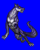
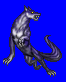
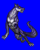
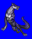

Height: ??? Weight: ???
Habitat: Asgard Origin: Europe
Meaing: He who shakes the earth
Minion of the evil god Loki, it appears as a large wolf. Its jawspan is so wide that it can emcompass heaven. Because of its ferocity, Odin and the forces of Asgard attempted to capture Fenrir, but failed twice before succeeding by binding it with magical rope. This rope will be undone at the time of Ragnarok, the end of the world, at which time Fenrir will swallow Odin.
See also: Midgard Serpent and Odin